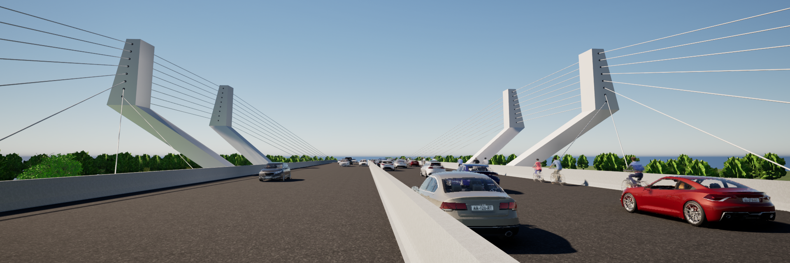
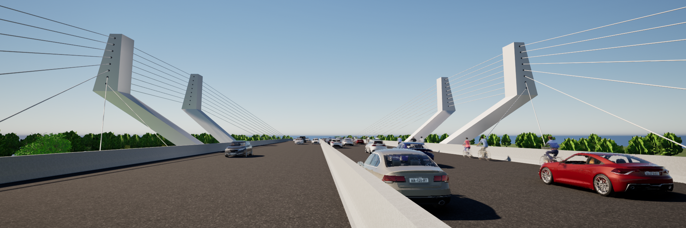
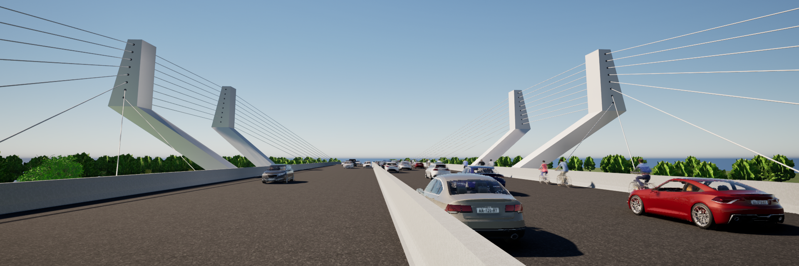
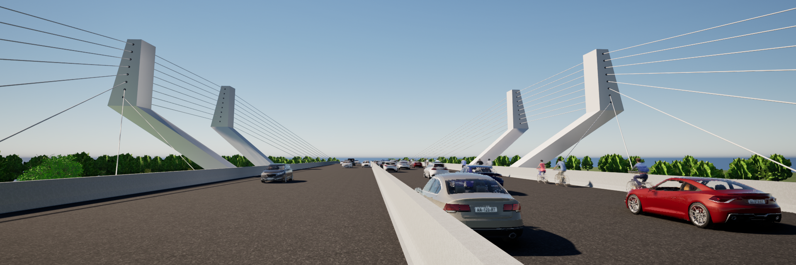

A proposta do Parque Linear em Piraquara visa principalmente estabelecer uma conectividade urbana entre os bairros, promovendo acessibilidade e integração social por meio de espaços verdes interligados, tendo também como fator importante a preservação ambiental. O parque conta com um amplo programa de necessidades, incluindo áreas de lazer e esportes distribuídas estrategicamente para gerar entretenimento aos usuários. Além disso, seriam implantadas wetlands, a fim de cumprir sua função para a contenção das águas e a limpeza dos rios.